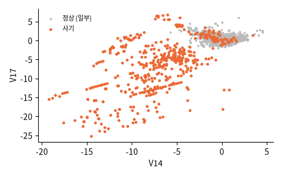

유럽 카드 소지자의 2013년 9월 이틀치 거래, OpenML 1597 (원본 Kaggle mlg-ulb). 성분은 개인정보 때문에 PCA 로 바꾼 V1~V28. OpenML 판에는 시각 열이 없지만 행이 시간 순서대로 놓여 있다

| V1 | V2 | V3 | V14 | V17 | Amount | Class |
|---|---|---|---|---|---|---|
| -0.3233 | 1.057 | -0.04834 | -1.802 | 0.8466 | 40 | 0 |
| -0.3497 | 0.9326 | 0.143 | -0.7708 | 0.4921 | 1.98 | 0 |
| -1.615 | -2.407 | 0.3262 | 0.3483 | -1.137 | 96 | 0 |
| -2.477 | 0.8606 | 1.442 | 0.279 | 0.1163 | 308 | 0 |
| 1.339 | -0.5473 | 0.7374 | 1.252 | 1.878 | 5 | 0 |
| 0.03988 | 2.171 | -2.013 | -3.478 | 3.35 | 1.51 | 0 |
| 열 | 종류 | 빈칸 | 고유값 수 | 범위 · 대표값 |
|---|---|---|---|---|
| V1 | 숫자 | 0 | 275,663 | -56.41 ~ 2.455 (평균 0) |
| V2 | 숫자 | 0 | 275,663 | -72.72 ~ 22.06 (평균 0) |
| V3 | 숫자 | 0 | 275,663 | -48.33 ~ 9.383 (평균 0) |
| V4 | 숫자 | 0 | 275,663 | -5.683 ~ 16.88 (평균 0) |
| V5 | 숫자 | 0 | 275,663 | -113.7 ~ 34.8 (평균 0) |
| V6 | 숫자 | 0 | 275,663 | -26.16 ~ 73.3 (평균 0) |
| V7 | 숫자 | 0 | 275,663 | -43.56 ~ 120.6 (평균 0) |
| V8 | 숫자 | 0 | 275,663 | -73.22 ~ 20.01 (평균 0) |
| V9 | 숫자 | 0 | 275,663 | -13.43 ~ 15.59 (평균 0) |
| V10 | 숫자 | 0 | 275,663 | -24.59 ~ 23.75 (평균 0) |
| V11 | 숫자 | 0 | 275,663 | -4.797 ~ 12.02 (평균 0) |
| V12 | 숫자 | 0 | 275,663 | -18.68 ~ 7.848 (평균 0) |
| V13 | 숫자 | 0 | 275,663 | -5.792 ~ 7.127 (평균 0) |
| V14 | 숫자 | 0 | 275,663 | -19.21 ~ 10.53 (평균 0) |
| V15 | 숫자 | 0 | 275,663 | -4.499 ~ 8.878 (평균 0) |
| V16 | 숫자 | 0 | 275,663 | -14.13 ~ 17.32 (평균 0) |
284,315 대 492. 로그 눈금이라 막대 높이가 비슷해 보인다
사기는 아주 작은 금액 (시험 결제) 이 많다
| ① 한 행 | 카드 거래 한 건 |
| ② 입력 X | 금액 · V1~V28 |
| ③ 출력 y | 사기인가 (Class 0/1) |
| ④ 평가지표 | 정밀도 · 재현율 (정확도는 함정) |
| ⑤ 기준선 | 전부 '정상' |
문제를 정할 때 처음 채워 보는 칸들입니다. 여기서 끝이 아니라, 시험 데이터를 어떻게 나눌지 · 틀렸을 때 손해가 얼마인지 · 예측 시점에 정말 알 수 있는 값인지 같은 칸을 더 붙일수록 좋은 문제가 됩니다.
always normal accuracy 99.874% precision 0% recall 0% logistic regression accuracy 99.917% precision 77% recall 49%
누가, 왜, 어떻게 만든 데이터인지 직접 확인해 보세요.
인턴 · 산학협력 · 프로젝트 주제를 고를 때 참고하세요 (일반적인 예시).